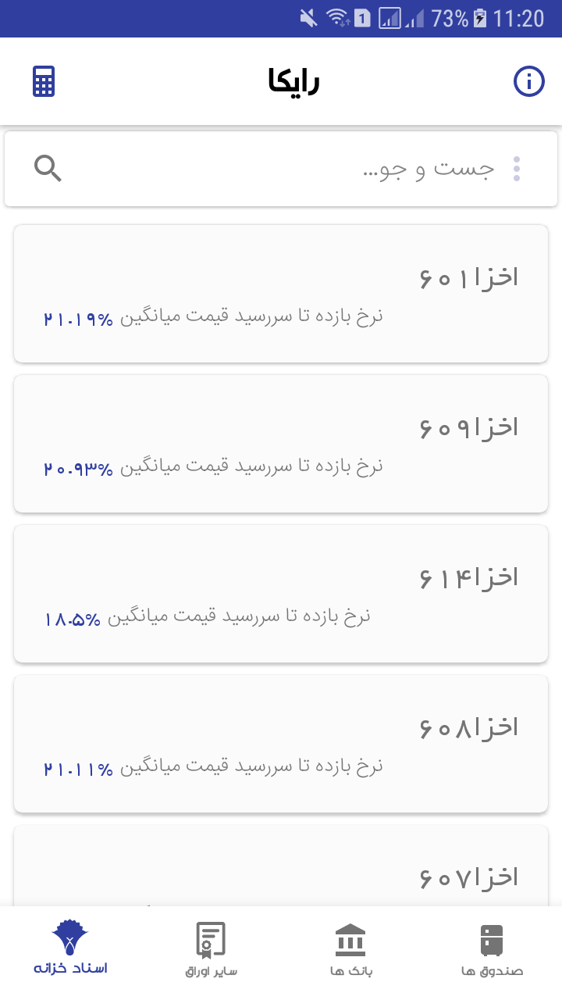
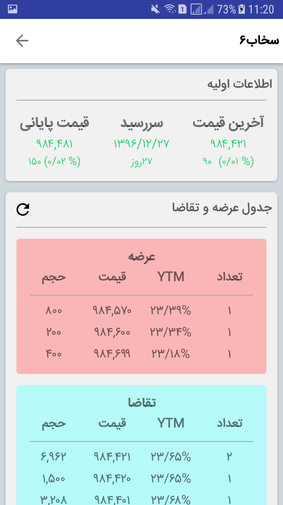
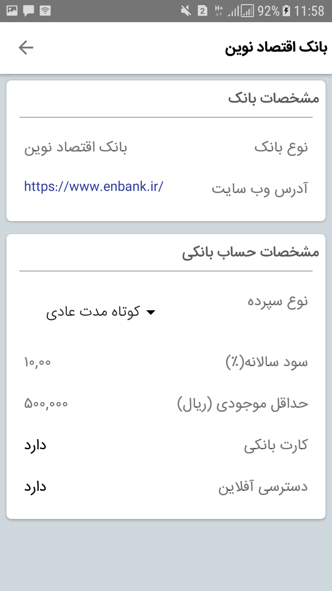
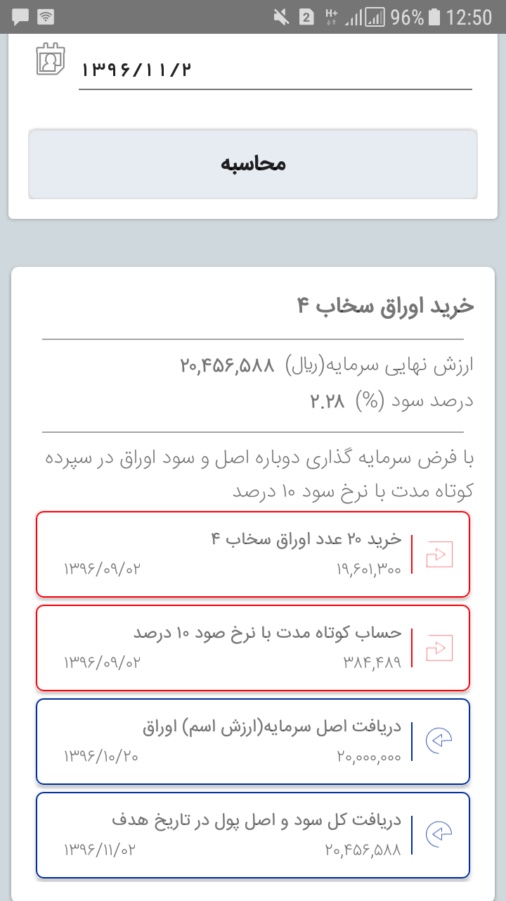
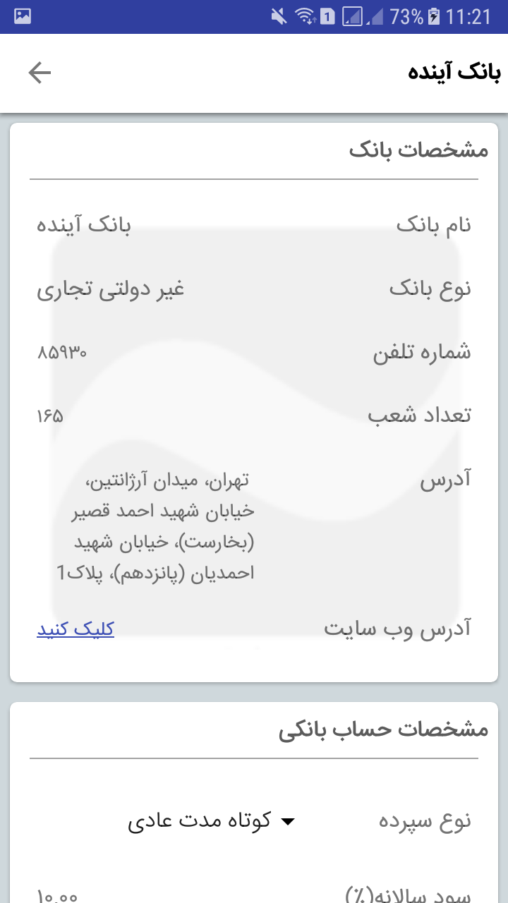
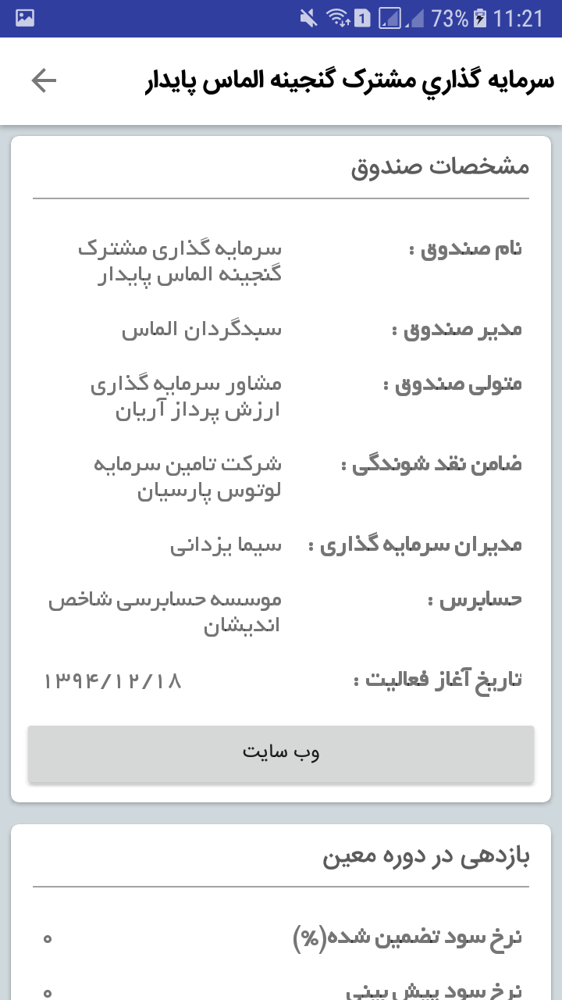

سامانه استعلام اسناد خزانه اسلامی
استعلام آنلاین قیمت اسناد خزانه اسلامی و مقایسه با سایر ابزارهای مالی، بانک ها و صندوق های با درآمد ثابت
-
اسناد خزانه
این اسناد، اوراق بهادار با نامی است که دولت آن را به جای بدهیهای خود بابت طرحهای تملک داراییهای سرمایهای با قیمت اسمی و سررسید معین به طلبکاران غیردولتی واگذار میکند. که به دلیل بازدهی مناسب به یک ابزار مالی جذاب برای سرمایه گذاران تبدیل شده است.
نرخ بازده تا سررسید قیمت میانگین معاملات طی روز در صفحه اول به صورت لیست شده با قابلیت مرتب کردن اطلاعات بر اساس سود صعودی و نزولی و جست و جو نام نماد آورده شده است. -
در برنامه ارائه سفارشات عرضه و تقاضا و نرخ بازده تا سررسید هر سفارش از پنل معاملاتی بورس درنظر گرفته شده است تا با مشاهده آنلاین معاملات و اطلاع از سررسید اوراق، سرمایه گذار به سادگی بازده مورد نظر خود را با قیمتهای فعلی بازار مقایسه و در صورت جذاب بودن اقدام به معامله نماید.
بعلاوه جهت سهولت امر، ماشین حساب محاسبه نرخ بازده تا سررسید طراحی و در اختیار کاربر قرار گرفته است که با وارد کردن قیمت خرید برگه مورد نظر و ورود تاریخ خرید نرخ بازده تا سررسید محاسبه میشود. -
سایر اوراق
لیست انواع اوراق با درآمد ثابت که به موجب قانون یا مجوز بانک مرکزی جمهوری اسلامی ایران به قیمت اسمی مشخص برای مدت معین و برای تأمین بخشی از منابع مالی مورد نیاز طرحهای عمرانی- انتفاعی منتشر میشوند و به سرمایهگذارانی که قصد مشارکت در اجرای طرحهای یاد شده را دارند جهت مطالعه دقیق ترفراهم شده است.
 -
در این قسمت برنامه اطلاعات انواع اوراق به صورت جامع جهت استفاده سرمایه گذاران و به صورت کاملا کاربردی شامل روزهای باقی مانده تاسررسید و نرخ بازده و تاریخ انتشار و سررسید و ضامن اوراق گرد آوری شده است.
-
بانک ها
در این بخش به معرفی تمامی بانک های اسلامی پرداخته شده است که شما می توانید به تمامی اطلاعات آن ها از قبیل انواع حساب ها، میزان سود حساب های کوتاه مدت، بلند مدت، صدور کارت های بانکی آن ها و ... را در دسترس داشته باشید.
 -
جهت سهولت امردسترسی به آدرس وب سایت و شماره تلفن دفاتر مرکزی درنظر گرفته شده است.
 -
صندوق های درآمد ثابت
همچنین در این نرم افزار به تمامی صندوق های سرمایه گذاری با درآمد ثابت پرداخته ایم که با رابط کاربری آسان وطراحی کاربر پسند تمامی مشخصات صندوقهای با درآمد ثابت اعم از ضامن نقدشوندگی و متولیان و مدیران و بازدهی صندوق در دوره های زمانی متفاوت از روز تا سال، بسته به نیاز کاربر و مشخصات مورد نیاز معامله شامل قیمت صدور وابطال و همچنین ترکیب دارایی های صندوق به تفکیک و مشخص شده توسط نمودار آورده شده است.
-
شما می توانید با توجه به سود یا هر آنچه که بخواهید آنها را مرتب کنید و بدون صرف وقت زیاد و جست و جو همه صندوق های با درآمد ثابت را به صورت یکجا داشته باشید.
 -
ماشین حساب
بعلاوه جهت سهولت امر، ماشین حساب محاسبه نرخ بازده تا سررسید طراحی و در اختیار کاربر قرار گرفته است که با وارد کردن قیمت خرید برگه مورد نظر و ورود تاریخ خرید نرخ بازده تا سررسید میشود